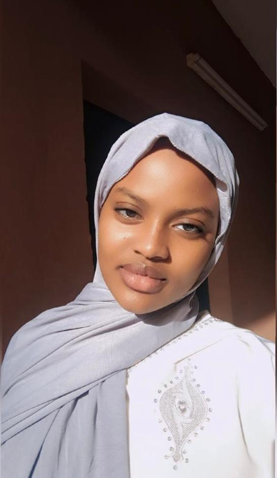

ETUDIANTE EN DEUXIEME ANNEE A L'UNIVERSITE IBA DER THIAM DE THIES
Etudiante passionnée en informatique.Je suis fascinée par le développement de logiciels.Je suis une personne determinée,curieuse et toujours à la recherche de nouvelles connaissances.